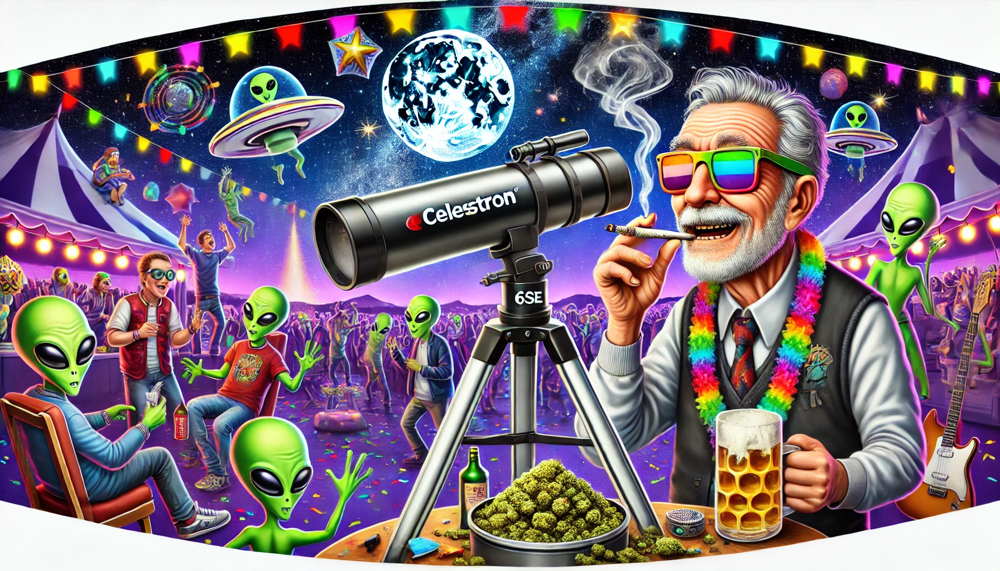

I read or heard or saw something, somewhere—I don't remember, because I was stoned. That I do remember! Anyway, it boils down to this... They say there could be, or might be, or something like that... a multiverse... so infinite amounts of me, doing every conceivable thing. If it's true, I'm going here... no questions asked... GOODBYE...
Steve had always been a man who lived life at his own pace, but when he set out on the “Cosmic Puff 420” with Mary Jane, his non-binary dog, he didn’t realize just how slow that pace would become. Equipped with a staggering 232 billion joints, one for every half hour of the journey to Sirius (seriously, the math checks out), a spaceship the size of a small moon, and a spirit for adventure, Steve blasted off toward Sirius, a journey that would redefine the meaning of time and chill.
When asked why he needed so many joints, Steve replied, “Listen, it’s a long trip—like, REALLY long—and I refuse to be sober for even one half-hour of it. Call me a visionary, call me lazy, but I’m taking no chances!” And thus, the 232-billion-joint stash became an integral part of the mission plan.
What Steve had anticipated was that his ship, had a quirky malfunction in the HyperChill Life Preservation System, which would keep him in a state of perpetual stasis. Not frozen, but simply... unchanged. As the years turned to centuries, then millennia, Steve remained the same spry 52-year-old man with salt-and-pepper hair and a love for a good smoke.
In the first few decades, life aboard the Cosmic Puff was a stoner’s dream. With the infinite expanse of the universe as his view, Steve smoked his way through his stash, watching galaxies drift by like smoke rings in a gentle breeze
He did this from one of the half-gravity stoner lounges, one on every deck, just in case of an emergency, the only places where even the couches are too chill to stay put.
With gravity on half, you don’t sit on the furniture—you hover above it like a lazy astronaut.
The walls are decked out in glowing nebula art that looks way cooler when you’re high, and the stars outside the windows seem to wink at you in slow motion. Cushions float by like little UFOs, gently bumping into people as if they’re saying, “Yo, you wanna hang?”
The joint bar? Oh, it’s a masterpiece. Joints drift through the air like they’ve got their own orbit, coming right to you without you even having to reach. The air is thick with the smell of space weed, and the whole lounge feels like a gravity-free dream where the laws of physics are on vacation. It wasn’t until he checked his stash counter at the end of Year 100 that he realized he’d barely put a dent in it.
“I’m gonna need a bigger appetite,” he joked to Mary Jane, who wagged their tail in zero gravity.
Mornings spent experimenting with zero-gravity joint rolls (dubbed “Galactic Blunts”), afternoons chilling in the ship’s observation dome, and evenings jamming to his playlist of classic Earth tunes. As the decades rolled on, Steve noticed something sweet—he wasn’t aging. His joints burned out, but he didn’t.
“This must be what they meant by timeless vibes,” he mused, exhaling a cloud of smoke.
It was 420 years into the voyage(because of course it was), and Steve was chilling in one of his stoner lounges, stretched out on a recliner under the night sky. His telescope was parked nearby, aimed lazily at a random star cluster, but Steve wasn’t in much of a hurry to use it. He exhaled a slow puff of smoke, letting the herbal aroma mix with the cool recycled air. Mary Jane lay sprawled at his feet, their ears twitching at the faint sounds of crickets.
Everything was perfect. Until it wasn’t.
A blaring alarm split the serenity like a hammer on glass. Mary Jane shot to their feet, barking furiously as the screens lit up in shimmering green. A colossal spaceship descended from above, its hull gleaming with intricate alien carvings and pulsating lights.
A booming voice roared from the heavens. "HUMANOID DETECTED. PREPARE TO BE VAPORIZED."
Steve squinted up at the ship, unimpressed. "Vaporized? Man, I’ve already done that tonight." He took another drag from his joint.
Ignoring him, a beam of light shot down, scanning him and Mary Jane with an electric hum. The barking intensified, but Mary Jane didn’t flinch from the light. Steve, still seated, waved lazily at the ship. "Hey, chill out up there. What’s this all about?"
The booming voice grew louder. "THIS IS NO TIME FOR CHILLING, HUMANOID. YOU ARE A THREAT TO THE GALACTIC ORDER. PREPARE FOR—"
Before the sentence could finish, the ship's engines sputtered and died down, as though reconsidering. A pause followed, long enough for Steve to think they’d finally taken the hint. But then, a group of strange, gangly creatures descended from the ship, their elongated toes flexing as they touched the ships deck.
The Glorptonians, as they would later introduce themselves—had translucent skin that shimmered in rainbow colors. Their glowing green eyes darted nervously around, and their toes wiggled with agitation.
One of them stepped forward, speaking in a deep, echoing tone. "Apologies, Humanoid. We may have made a mistake. Your energy signature matches a dangerous lifeform… but there is an anomaly in the data."
Steve raised an eyebrow. "Anomaly? You mean me? Or the weed?"
The Glorptonians exchanged confused glances. "We do not understand your reference to 'weed.' Explain this… herb you are consuming."
Steve held up the joint, smirking. "This? It’s weed. Want to try?"
The leader hesitated, but before long, curiosity overcame their caution. One of the Glorptonians reached out with their toes,long spindly things that curled delicately around the joint. Taking an experimental puff, they exhaled a plume of cosmic smoke through their feet. The effect was immediate. Their skin glowed brighter, their toes wiggled joyfully, and their entire body seemed to hum with newfound relaxation.
"Astonishing!" the leader declared. "The sacred herb of relaxation. Could this be…?"
The Glorptonians soon forgot all about their mission of destruction. Within moments, they were sprawled in Steve’s lounging garden, on the screens Steve could see their ship’s lights flickering in sync with the tunes he had queued up on his speakers. Mary Jane was happily wagging their tail, receiving belly rubs from a particularly friendly alien.
Hours passed in this blissful haze. It wasn’t until the Glorptonians began to discuss their sacred texts that the truth emerged.
"Species 420," one of them said dreamily, "was the name given to our ancestral dealers. They were peaceful beings who introduced us to the concept of cosmic chill. Could this Humanoid… Steve… be a descendant of that sacred lineage?"
The leader stared at Steve, their glowing eyes wide. "It is you," they whispered. "You are Species 420."
Steve froze mid-drag, then burst into laughter. "Wait. Hold on. You’re telling me I’m some kind of intergalactic weed prophet?"
"It is no laughing matter," the leader said gravely. "We owe you an apology for nearly destroying you and your vessel. Please accept this gift as a token of our gratitude."
They handed Steve a glowing orb, its surface swirling with colors like a miniature galaxy. "This Cosmic Chill Sphere will summon us whenever you are in need. Use it wisely… or just invite us for another session."
As the Glorptonians departed, their ship leaving trails of glittering smoke, Steve sat back in his chair, the orb glowing softly in his hand. He turned to Mary Jane, who nuzzled against his leg.
"Well," he said, grinning, "guess we’re officially galactic legends now. Not bad for a Wednesday night."
By the first millennium, Steve’s ship had attracted attention from curious travelers. He hosted aliens from across the universe who stopped by to “sample” Earth’s finest herb. Each species brought their own quirks:
Steve turned the ship into a galactic party hub, earning a reputation as the “Eternal Chiller of the Cosmos.”
As the years stretched into millions, the Cosmic Puff became a living legend. Planets wrote songs about Steve, and comets carried his story across the stars. He’d become the universe’s favorite myth: the ageless traveler who smoked his way through infinity, hosting parties that defied time.
Steve, meanwhile, took it all in stride. With infinite time, he tried everything:
Steve developed hybrid strains with names like “Nebula Nirvana” and “Sirius Chronic,” famous for their ability to induce visions of entire galaxies.
Using the ship’s supplies, he crafted massive sculptures out of rolled joints, including a replica of Earth that orbited the ship.
Every now and then, Steve would land on a new planet for laughs and to try the local weed, if any. Once, he convinced a planet of sentient mushrooms to throw a galaxy-wide rave.
Steve was recling lazily in his spaceship’s captain’s chair, a joint lazily burning between his fingers. “MJ,” he mumbled, “you ever think space is just... God’s ashtray?”
Mary Jane barked and wagged their tail, clearly more concerned with the empty snack stash. They hadn’t seen a cosmic 7-Eleven in half a million years.
Suddenly, alarms blared. A shimmering blob of light phased into the ship, wobbling like a lava lamp. “Greetings, carbon-based beings!” it boomed. “I am Glorpax, emissary of the Intergalactic Poop Cycle.”
Steve staring, offered the blob his joint. “You smoke?”
Glorpax jiggled with delight. “I consume... in a manner of speaking.” With a wet plorp, the blob ejected a perfectly cooked grilled cheese sandwich.
“Dude!” Steve whispered, taking a bite. “This is... amazing. You just... pooped this out?”
Mary Jane, curious, did their business in the corner. Glorpax slurped it up with enthusiasm. “Exquisite!” it exclaimed. “Your dog is an artist of waste!”
Steve laughed, then stood up. “If it eats dog poop...” He hesitated, then nodded. “Alright, I’m contributing.”
Minutes later, Glorpax consumed Steve’s offering and produced a glowing burrito. “Outstanding!” it declared.
Glorpax handed Steve a glowing orb. “This recycler will sustain you on your journey. In waste, there is wonder.”
As the blob phased out, Steve grinned. “MJ, eleven million years to go, but we’re set. Let’s roll.”
Finally, after millions of years of adventures, Steve reached Sirius. By now, the Sirusians had long forgotten his mission, evolving into shimmering beings of pure light. They welcomed him with curiosity, marveling at his ship and his endless stash of cosmic joints.
“Steve,” the Siriusian leader said, their voice a symphony of stars, “you’ve traveled for millennia. How do you feel?”
Steve lit a joint, took a long drag, and grinned. “Honestly? Best road trip ever.”
As he shared his herb with the Sirusians, laughter filled the air. Steve, the Eternal Chiller and MJ had finally come full circle.
Steve never stopped traveling. After leaving Sirius, he continued exploring, spreading laughter, smoke, and good vibes across the cosmos. With infinite time and no need to age, he became a universal icon of peace, relaxation, and the joy of living in the moment.
His ship’s motto, etched on its hull, became a mantra for the ages:
